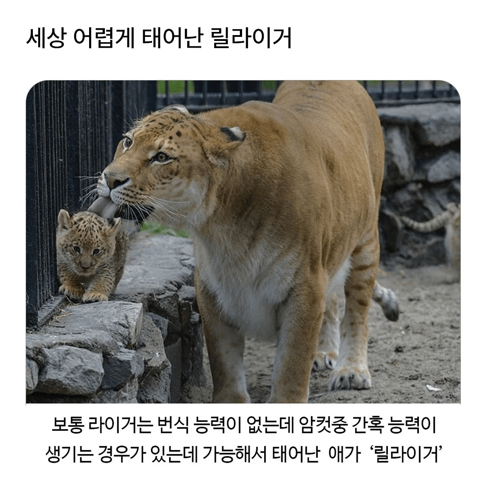
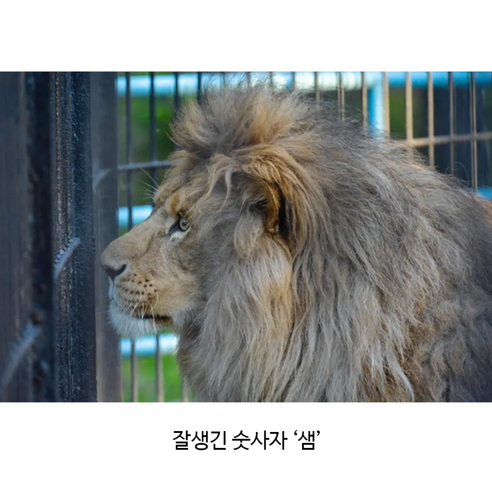
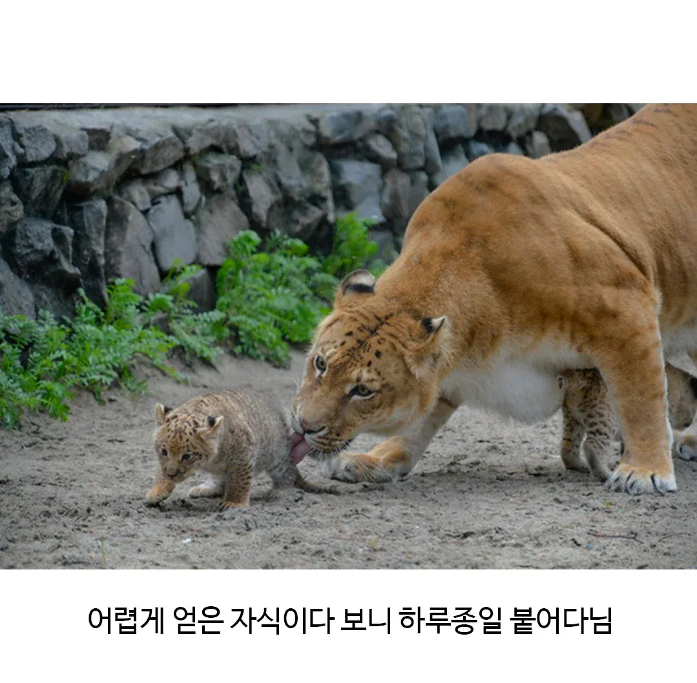
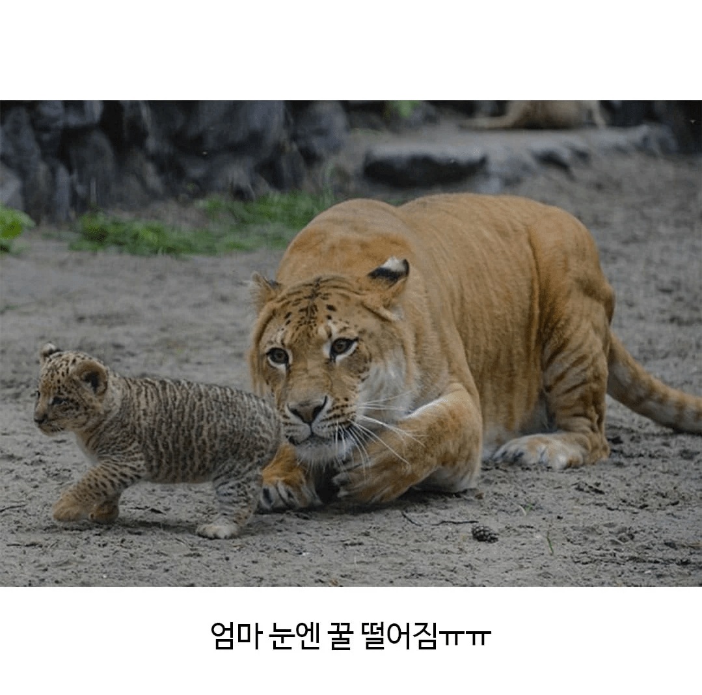

몸에 $ 무늬 있을거같아

몸 무늬는 표범이네
릴라이거들은 번식능력 있음?
이후 세대는 유전자가 더 안정화 되었을태니 아마 있을듯?
설마 표범의 먼 조상은...
사자랑 해서 Li liger 인건가
라이라이거.....기합!
어떻게 동물 이름이 라이라이 거
옆에 새끼 한마리 더있네
라이라이거거거!

이름 힙하네 ㅋㅋㅋㅋ
새끼가 한마리가 아닌거같네
옆집에 흑 거근 고릴라가 살고있어서 릴라이거 아니지?
라이거가 몸이 엄청 크다던데
늑대와 향신료같은거지?
ㄴㄴ
그건 원래 임신이 가능한 정령을 주인공이 한 1500번 박아대서 강제로 임신 시킨거고
저건 애초에 보통 "불임"으로 태어나는데 간혹 그중에 "난임"이거나 임신 자체가 가능한 케이스가 종종 발생하는
매우 희귀 케이스 라고 함
신기하네...
인간도 마찬가지였음. 홀데인의규칙이라고 호모 사피엔스 네안데르탈인 조합에서 호모 남 + 네안 여는 후대도 번식 가능했고 반대의 경우는 불임.
오호 재밌네. 설명 감사.
마치 호모사피엔스가 네안데르탈인을 정복하게 만들어진거같네
늑대와 향신료가 그런 내용이엇음?
작중에 마지막 부분쯤에 나오긴 함
정령과 인간이 아이를 가질 확률은 1/1000이다 였던가?로 나옴
그런데 엔딩 이후로 애가 있잖음
오차범주 넣고 한 1500번 해댄거지 남주새끼가
ㅈㄴ박긴했나보네
줄여서 리거
라이거 몸집이 꽤 큰데 거기에 (엄청나게)박은 숫사자 샘
샘은 bbw취향인 셈
숫사자들이 장난으로 애기사자 툭툭 치면 엄마 달려와서 존나 개빡친 표정하면서 꿀밤먹이고 숫사자 시무룩해짐
동물들도 아기 사랑하는게 느껴짐 ㅋㅋㅋㅋ
마지막 개 귀엽네
안정화 좀 되면 세로운 종이 되는건가
릴라이거 (믹스)
표범이네
표범닮았네
과거 우리나라에 있던 호랑이들은 대체 얼마나 해댄걸까..
새끼 생긴 게 신기하네. 몸은 사자새끼 같은데 무늬는 호랑이나 표범에 가까우니.
원래 표범, 호랑이, 사자 전부 표범무늬 조상에서 분화한거라 발생 초기~생후 n일까진 다 표범무늬였다가 표범무늬, 줄무늬, 민무늬로 분화되는데 저건 사자+호랑이+사자 과정에서 원시 회귀 했거나 아직 새끼라 그런듯
라이라이 거!
내가 자식 얻으면 저런기분이겠지...
라이라이거...기합!
Lil liger 좀 힙한데